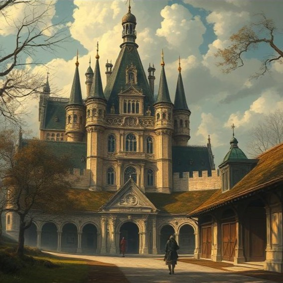

Vous arrivez au Chateau de Chantilly. C'est ici qu'a été apperçu pour la dernière fois la monture de Simon Delestre.

Vous arrivez à l'entrée du chateau de Chantilly.
Devant vous se dresse le magnifique chateau connu pour son parc et sa grande collection d'objets d'art et sa
Galerie de Peinture du XVIème siècle.
En regardant avec attention sur votre droite vous devinez l'entrée des prestigieuses Grande Écuries
de Chantilly qui font la renommée du parc.
C'est là qu'a été vu pour la dernière fois le cheval de M. Delestre.
Au loin vous voyez une jeune fille qui semble travailler ici.